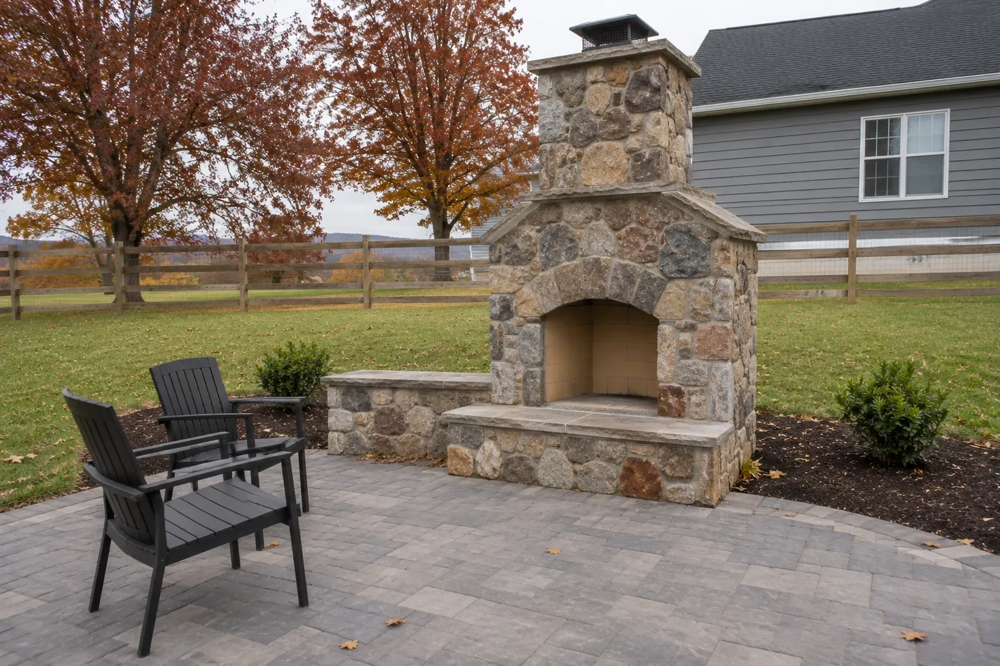
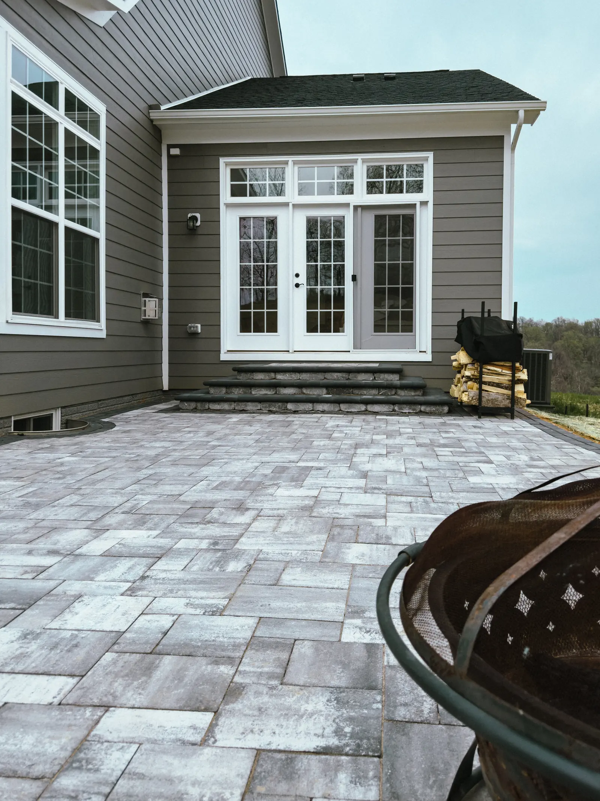
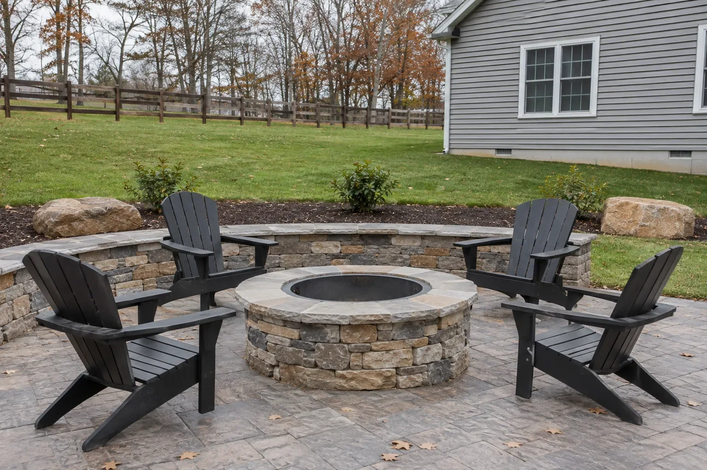
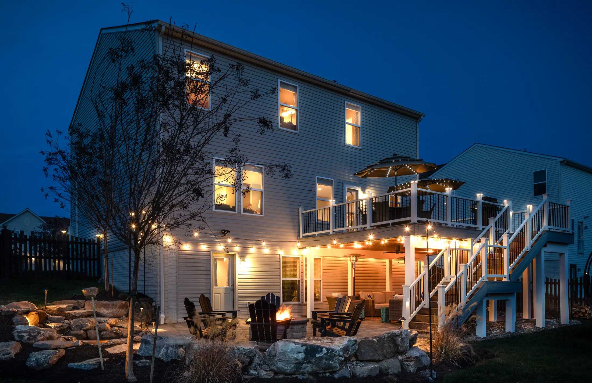
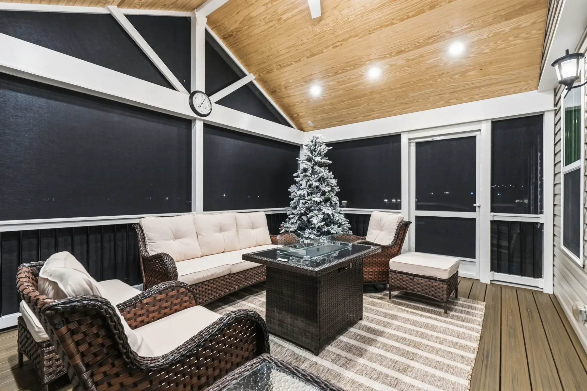
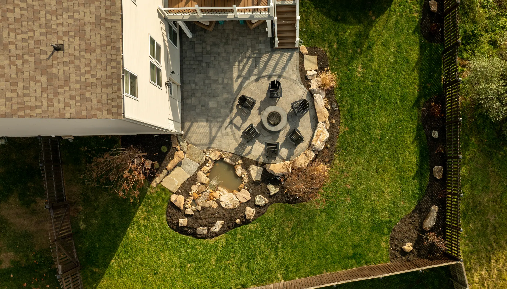
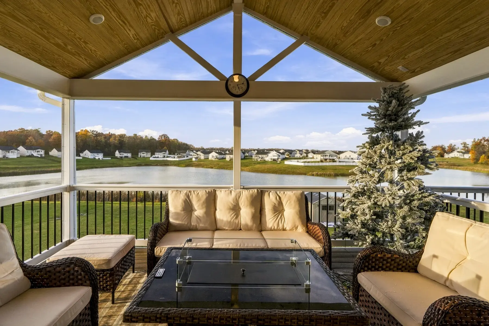

Custom Outdoor Fireplaces in Winchester, VA
We design and build outdoor fireplaces and fire features in stone and brick, bringing warmth and year-round comfort to your backyard.
- 01Stone
- 02Brick
- 03Gas
- 04Wood-burning
- 05Fire pits
Winchester, VA’s Warm and Welcoming Outdoor Fire Feature Experts
Custom Outdoor Fireplaces in Winchester VA
Our custom outdoor fireplaces in Winchester VA are designed to bring warmth, ambiance, and year-round enjoyment to your outdoor living space.
Whether you want a cozy gathering spot for family nights or an elegant focal point for outdoor entertaining, Potros Construction creates stunning fire features tailored to your vision. We work with high-quality materials such as stone, brick, and pavers to build fireplaces that match your home’s style and withstand years of outdoor use. Each project begins with a detailed consultation to determine the size, shape, location, and design that best complements your patio or backyard layout. We prioritize safety, airflow, heat distribution, and structural integrity to ensure proper performance. With expert craftsmanship and durable construction, your custom fireplace becomes a beautiful addition that transforms your outdoor space into a warm, inviting retreat you can enjoy in every season.


01Stone & brick
Stone and Brick Fireplaces Built to Last
A well-crafted outdoor fireplace should not only look amazing—it should last for decades. Potros Construction builds fireplaces in Winchester VA using premium natural stone, brick, and high-quality masonry materials designed to withstand heat, weather, and wear.
Our craftsmen carefully layer and set each stone or brick to create a durable structure with excellent heat retention and long-term stability. We also offer a variety of design choices, including rustic stone, traditional brick layouts, or sleek, modern styles that enhance your outdoor aesthetic. Proper construction ensures your fireplace remains safe and strong through winter freezes, heavy rain, and everyday use. With our combination of expert masonry techniques and premium materials, your outdoor fireplace becomes a long-lasting centerpiece that adds beauty, value, and comfort to your home
- Premium natural stone and brick
- High-quality masonry materials
- Built to last for decades


02Gathering
Perfect Gathering Spot for Outdoor Entertaining
Nothing completes an outdoor living area quite like a custom fireplace. Our Winchester VA fireplaces create the perfect gathering spot for friends and family to enjoy evenings outdoors—whether you’re hosting guests, relaxing after work, or spending quality time with loved ones.
The warm, inviting glow of a fireplace extends your outdoor season, allowing you to comfortably use your patio during cooler months. It also enhances ambiance and makes your backyard feel like an extension of your indoor living space. With comfortable seating areas built around your fireplace, you can design a cozy lounge or entertaining space that fits your lifestyle. Whether you want an intimate corner fireplace or a large statement piece, Potros Construction helps you create an outdoor environment that feels comfortable, welcoming, and visually stunning.
- A focal point for family nights and entertaining
- Seating planned around the fire
- Designed to fit your outdoor living area


03Gas & wood
Gas, Wood-Burning, and Custom Fire Features
Potros Construction builds a wide variety of outdoor fire features to suit your preferences and lifestyle. Whether you prefer the convenience of a gas fireplace or the traditional crackle of a wood-burning design, we can create the perfect setup for your backyard.
Gas fireplaces provide quick ignition, easy operation, and low maintenance, making them ideal for homeowners who want efficiency. Wood-burning fireplaces offer a classic outdoor experience with natural warmth and ambiance. We also design custom fire pits, fire walls, and integrated seating features for an upgraded outdoor entertainment area. Our team ensures proper ventilation, safe construction, and high-performance materials for every project. Whatever style you choose, your fire feature will enhance the comfort, atmosphere, and beauty of your outdoor space.
- Gas fireplaces for convenience
- Wood-burning for the traditional crackle
- Custom fire features to suit your lifestyle
Our work
Fire feature projects
Fire pits and fire features from recent builds around Winchester.


Why it matters
Enhance Your Outdoor Living Space With Custom Fire Design
Enhance your outdoor living space with a custom fire design that brings warmth, beauty, and year-round comfort to your backyard. Whether you’re dreaming of a classic stone fire pit, a modern gas fire feature, or a fully built outdoor fireplace, our team creates stunning, durable installations tailored to your style and the layout of your property. A well-designed fire feature not only elevates the atmosphere but also extends the time you can enjoy your outdoor space—perfect for family gatherings, relaxing evenings, and entertaining guests. As a trusted local outdoor construction company serving Winchester, VA, we use high-quality materials and skilled craftsmanship to ensure every project is built to last. From design to installation, we work closely with you to create a focal point that adds value and charm to your home. Turn your backyard into the cozy, inviting retreat you’ve always wanted with a custom fire feature built just for you.
- Year-round comfortA fire feature extends the season you can enjoy your yard.
- A natural focal pointStone and brick give your outdoor space a place everyone gathers.
- Lasting valueQuality masonry adds beauty and value to your property.
Our process
From first visit to finished space.
- 1
In-Person Estimate
We visit your home, discuss your project, and take measurements.
- 2
3D Virtual Design
See your project in a realistic 3D virtual tour before we start.
- 3
Build & Enjoy
Our team brings your approved design to life with quality craftsmanship.
3D virtual design
See your project before we build it.
Every project starts with a realistic 3D virtual tour, so you can walk through your design and approve every detail before we break ground.
What types of construction services does Potros Construction offer?
We handle hardscapes, patios, decks, porches, landscaping, outdoor fireplaces, and full outdoor living builds.
Do you provide free estimates for projects?
Yes, we offer free on site estimates where we review your goals, materials, and project details.
Are you licensed and insured for residential construction?
Yes, Potros Construction is fully licensed and insured for all work we perform in Virginia.
How long do most projects take to complete?
Project timelines vary based on design, materials, and site conditions, but we provide a clear schedule before work begins.
Can you help with design ideas and material selection?
Absolutely. We guide you through choosing styles, colors, and materials that fit your home and budget.
Do your projects come with any warranties or guarantees?
Yes, we offer workmanship warranties on all projects and use materials backed by manufacturer guarantees.
Reviews
What our clients say about us.
Service area
Our Satisfied Winchester, VA Area Clients Are Our Main Priority
- Winchester
- Front Royal
- Strasburg
- Berryville
- Stephens City
- Middletown
- Clear Brook
- Martinsburg, WV
- Charles Town, WV
- Ranson, WV
- Leesburg
- Ashburn
- Sterling
- South Riding
- Purcellville
- Middleburg
- Hamilton
- Lovettsville
- Manassas
Also servicing Loudoun County, Virginia.
Fireplaces in Winchester, VA